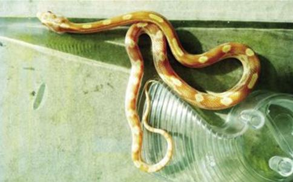

那是1996年的一个夏天，我上职业中学的第二个学期，学校在南蛇岭，那里蛇很多，因为土地干旱，常见有蛇爬到路边来。那时我一个人走路去学校，正走在半路上，看到路边有一条小蛇趴在地上一动也不动，我好奇心起，便走近去俯身一看，原来是一条受了伤的小蛇，我不仅没有一丝恻隐之心，见它没有反抗能力反而
可是当我再回过头去看那具死尸时，心中忽然产生一种恐惧感，不敢多看下去，于是转身就走。走了几步，我感到好像有一道无形的力量撞了我一下，脑子便有轰的一声响，整个人也颤抖了一下，也许这就是所谓的鬼魂附身吧？然后我感到周围好像一直有人在跟踪我，于是我急匆匆地走，一路上忐忑不安，心里面有一种奇怪的感觉。当我走到校门外时，又看见路中间有一条大蛇的尸体，散发出一股浓重的腥味，让人看了惨不忍睹，我只感到呼吸困难，心跳加速，我害怕极了，赶忙跑进校门，进了教室里，一颗心还在狂跳不止，我开始感到良心上的不安，后悔刚才的所作所为，连课也听不下，只好在日记本里面写道：“小蛇，我不是有意要杀害你的，都怪我一时冲动，希望你能原谅我，真是太对不起你了！……”这样写出来后，心里头才轻松了些，但我仍不明白为何会有那种恐惧感？
然而并不一定是良心上的谴责和口头上的道歉就可以得到对方的原谅，欠命债还须抵上一命来偿还，
转眼到了冬天，我早就将这件事给忘掉了。有一天班里给每人发了两颗碘药丸来预防大脖子病，我在上课的时候直接把一颗放入口中咬碎吞下了肚，另一颗不小心给弄丢了，因为我不知道碘药丸是不能空腹咬碎吞下肚的。到了晚上，我的腿开始发痒，我并没在意。第二天下午两条腿就出现红点，我以为天冷生了点小疮而已。第三天红点开始变大，由红转黑，晚上我还用冷水泡脚睡觉。第四天就是星期四，从腿到脚生满了有黑洞的红疮，开始引起了别人的注意，而我自已还是糊里糊涂，那时学校定五天制，我想明天就是星期五了，等回到家再给当医生的爸爸看看吧。这天夜里，整条腿冰冷酸疼，一夜难眠。
星期五中午，我的右脚肿得走路都困难，两条腿又痒又痛，从膝盖到脚背全长满了黑疮，我知道不得不赶快回家了，却不知道这是得了什么怪病，问同学们也都不晓得。
挨到下午放假了，我的右脚已肿得穿不下鞋子，只能用左脚一步一步地拖着走，我和几个女同学一起走在南蛇岭的路上，她们看了我的脚，都说像被蛇咬的一样，这句话让我记起那条无辜被我杀害的小蛇，走在这条路上，难免会触景生情。
好不容易走到家了，已经是傍晚吃晚饭的时间，当我把两条腿给爸妈看时，大家都惊愕住了，爸爸说从没见过这种怪疮，妈妈又怕又担心，说我腿上的疮好像蛇身上的斑纹。现在想来，才明白那腿上的一个个黑洞就如同我砸在小蛇身上的一块块石头，而那一片片红疮就是小蛇身上溢出的血啊！妈妈哭着到处帮我找医生，终于请来一位有经验的老医师，老医师看过病情之后，对我爸妈说：“这是过敏性紫癜，赶快带她去医院验血打针，不能拖了，再晚一天可能会没有命了，就算不死也可能会引发心脏病等后遗症。太危险了！你们怎么不早点送她上医院呢检查呢？”
那一夜，我的整条腿被抬得高高的，酸辣疼痛，这是为了便于血液循环，第二天爸爸扶着我去医院继续验血打针，妈妈帮我向学校请了病假，然后我就坚持打了一个星期的吊针，右腿才消了肿，黑疮也渐渐消了，只剩下红红的疤痕，由于注射了太多激素，整个人变得又白又肿，在家疗养了近一个月时间才能去学校，从此，我得“怪病”的事很多人都知道了，老师和同学们都非常关心和照顾我。
没过多久，病又复发了，黑疮虽然没有了，病一发作起来，脚就会红肿，又辣又痛。有一次上课时发作，痛得我直咬牙关掉眼泪，我低头看见右脚上的血管是乌黑色的，又肿又大，呈弯曲状，不禁另我心头一惊，因为这形状又让我想起那条小蛇，这不正是那天它趴在地上的样子吗？此时它就好像生在我的身体里狠狠地吞噬着我的血肉，那种恐惧感又开始侵袭着我的心，我感到害怕极了，痛得直哭，后来还是得请假回家治疗了。就这样反反复复地生病发作，折磨了我半年的时间才完全根除痊愈了。从那以后，也许是基于一种恐惧感，我再也不敢打蛇了。
可是此事并未就此罢休，在1997年读职中的第三年我去老家参加实习工作，有一次上山放牛，牛在山顶上踢了块大石头从我头顶滚落下来，我一点也没察觉，幸好对面的同乡大姐叫我，我才逃过这一劫难，后来的日子里我还经常无缘无故连续遭受到不少的打击，我才了解小蛇当时被杀害时的怨恨。如今想起来，那一切仿佛历历在目，还是觉得非常的可怕，
如果没有那条小蛇，我就没有信佛的因缘，小蛇就是我的真善知识，让我有了坚实的因果理念为基础，对我是有大恩大德的。感谢救苦救难的